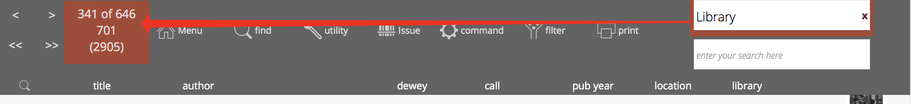
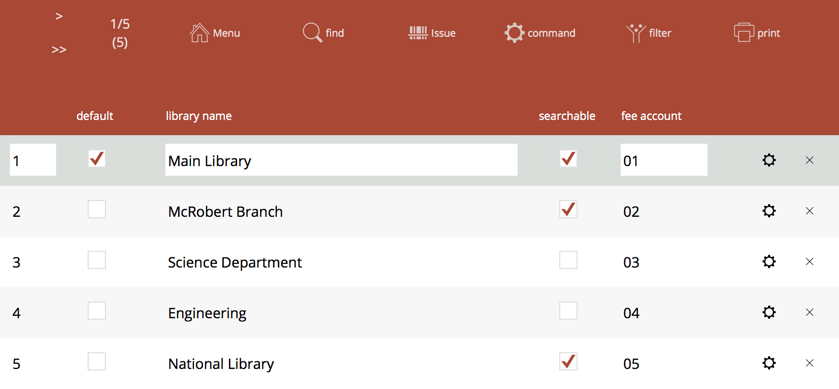
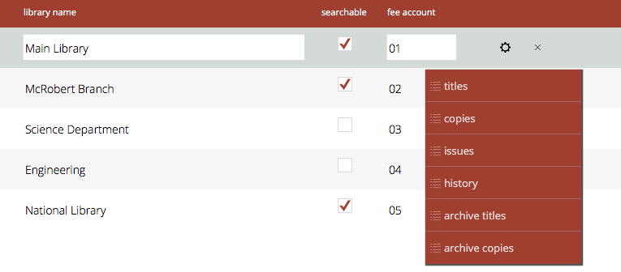
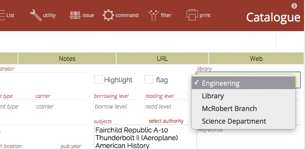
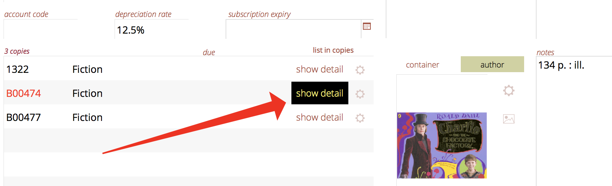
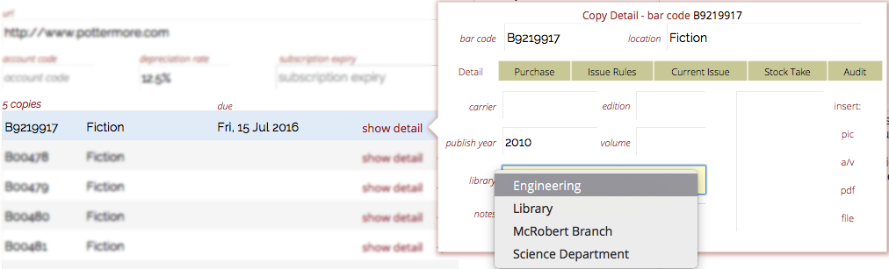
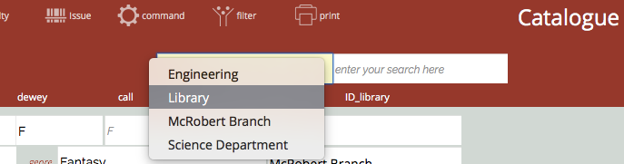
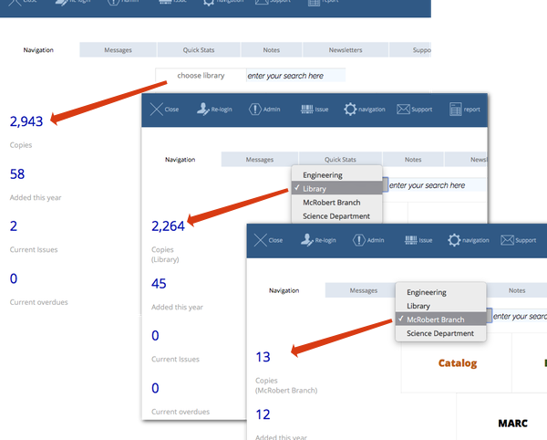

Libraries
Athenaeum (26) introduces the optional ability to more easily store multiple explicit library catalogues in a single location, with expanded ability for searching, reporting and accounting.
To restate, this feature is optional. If your Athenaeum catalogue is contained within a single logical library unit, then do not define any libraries. This will simplify some screens, as Athenaeum will not provide a library selector on those screens.
Properties
Libraries have the following characteristics
-
Libraries can affect Titles, Copies, Circulation, History, Fees and Archive entries (both title and copy archives)
-
Borrowers are not constrained to any particular library. For example, if they have a copy in their hand from any library that they wish to be issued, then Athenaeum will allow that (in accordance with other rules that might be in play)
-
Each library may have it's own "accounting" code
-
Titles can be assigned to zero or one libraries
-
Copies that belong to a Title allocated to a library will, by default, "belong" to that library
-
A Copy of a title may be assigned to a different Library than the Title. For example, you might have 10 copies of Shakespeare's Macbeth and 2 of them might belong to the main library and 8 of them might be assigned to the English Department
-
When viewing catalogue lists or search screens, if Libraries have been defined, then a pop-up menu will be displayed allowing the option for constrained searches
-
If a library is selected in that pop-up menu, then performing a search will add a constraining search criterium to any searches performed to restrict those searches the chosen library. To turn this off, simply deselect the library.
Library Constraining
-
Selecting a library will constrain the current found set of that list to that library (that is, if you have a found set in the list of 500 items, but only 200 are relevant to the library, then you will see only 200 after selecting the library.)
-
Selecting a library at the main menu will update the Dashboard Counts to reflect that library (as well as constraining any catalogue search launched from the main menu)
-
Clearing the library (using the little "x") will perform a find all in the list
-
The counters at the top left of the titles and copies screens include the number of entries for that library along with the total number of items in the list

Defining Libraries
At the main menu, choose the navigation option and select library.

In the resulting list view, add entries, one for each library, giving the library a:
-
unique name
-
whether or not you wish for titles in this library to be searchable by library patrons
-
an optional accounting code (included when exporting various information and certain reports, or levying fees for items in that library)
You should define your main (most used) library first as this will be the library used for any existing items you have in the catalogue.
Also, you may set a default library. That is, when new titles are added to the catalogue, they will default to that library.

Changing a Library's name
You can change the name of a library at a later date. However, please note:
-
the name must not be blank
-
the new name must be unique
If you change the name of a library, pop-up menus of library names are automatically updated.
Assigning Titles and Copies to Libraries
To assign a title, find that title in the catalogue and navigate to the detail view for that title. At the top right of the detail view, you can select the library from the pop-up menu.

Note, that if you have no libraries defined, then the pop-up menu is not available.
If you have assigned a title to a library, then there is no need to assign a library to the copies of that title if the copies are part of the same library.
However, to assign a copy to a different library, click the "show detail" button next to the copy (shown here highlighted when you hover the cursor over it).

Choose the library from the pop-up menu on the detail tab:

Changing a library after the fact
If you are adding libraries and then wanting to go back and set previously catalogued items to the new library, please be aware that you might need to adjust the library for BOTH Title and Copy.
If you search the catalogue using CTRL-2 or Command-2 or using the web search, remember it is the Title that is searched.
However, when you issue items, the ID of the library stored in the Copy record is written to the issue history (because it is the individual Copy that you issue, not the Title).
Searching
When you have defined one or more libraries, a library selection pop-up menu appears next to various search boxes.

When a library is selected a new constraining search request is immediately added to the current found set. That is, Athenaeum immediately performs a find within the current found set, possibly reducing the size of the found set.
Then, when you perform a search by entering a search term or specifying a detailed find, Athenaeum adds a constraint for only results applying to that library.
To remove the library constraint, click the small red "x" to the right of the library name.
Note: removing the library constraint does not immediately affect the found set.
Issuing
When issuing items, if the issued Copy is assigned to a library - either explicitly or via its Title record, then that issue will also be considered an issue for that library.
Note: changing a Copy's library (either explicitly or via the Title record) will not change the library recorded for historical issues.
Main Menu Dashboard
The quick statistics dashboard at the main menu is also cognisant of the library selection.
Deselecting a library (by clicking the "x" next to the library name) will show statistics for the entire catalog and issues. Choosing a library will recalculate statistics for that particular library.

The statistics presented in the Quick Stats tab are also cognisant of the selected library.
Fees
Fees within Athenaeum can be created arbitrarily from a borrower detail view or generated from an issue (e.g. it is lost or a late return).
In the latter case, if the copy in question is assigned to a library (either the Title record or the Copy record), then the fee will also be "allocated" to that library.
Changing a Title's Library
When changing the Library that a title is assigned, Athenaeum will check the Copies associated with that Title and update ONLY the Copies that were in the assigned to the original Library. Copies assigned to other libraries will not be changed.
Note: changing the Library does not affect the Library associated with existing issues and history records for those copies. The issues "belong" to the defined library at the time of issue.
Reporting on Libraries
Various reports can be generated for selected libraries or can be broken down by library.
Pressing the shift key when initiating Title reports will add a page break by Library.
Any report in title, copy, archive, stock take, issue, history that uses the found set, will already be constrained to the library when the filter is applied.